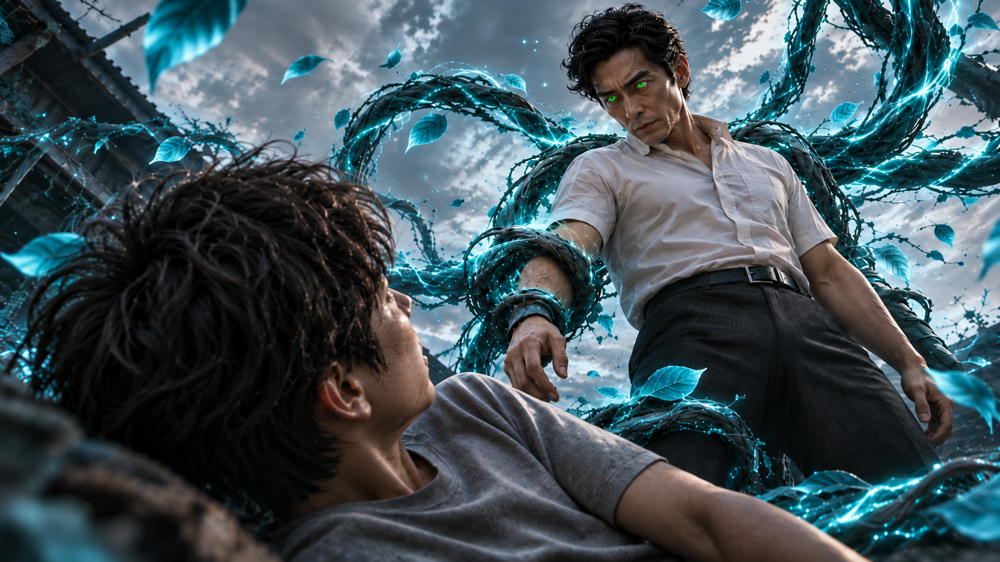
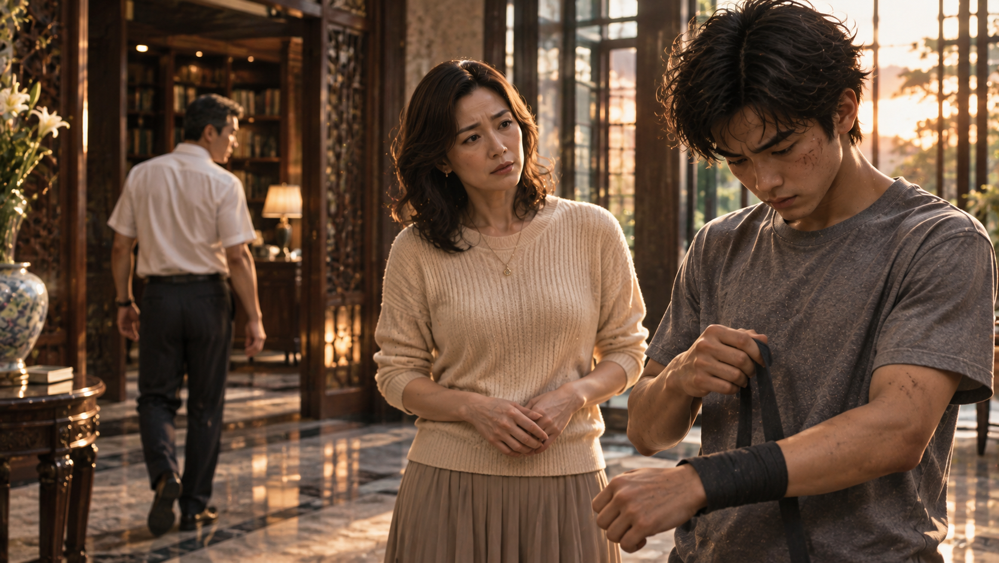
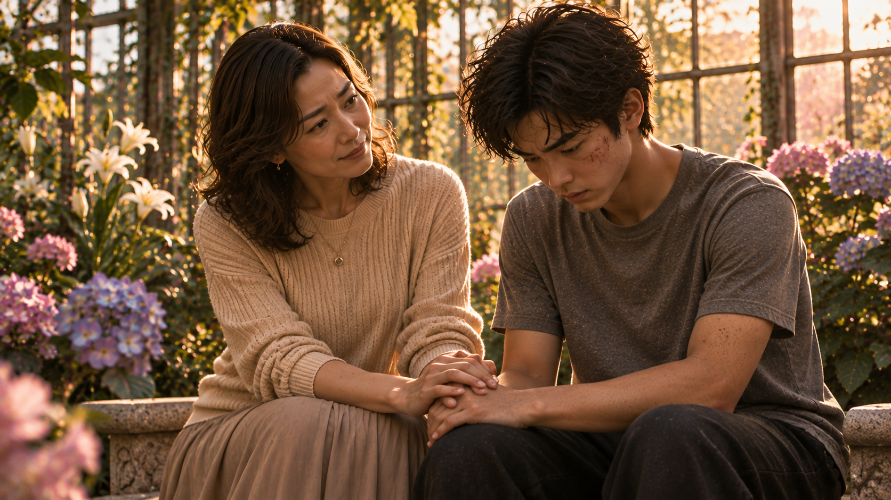
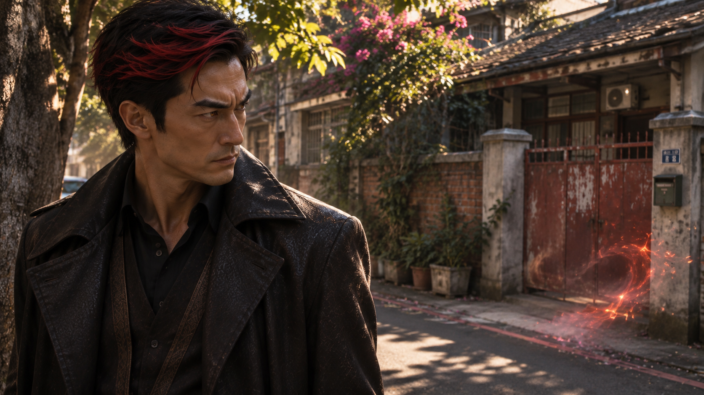
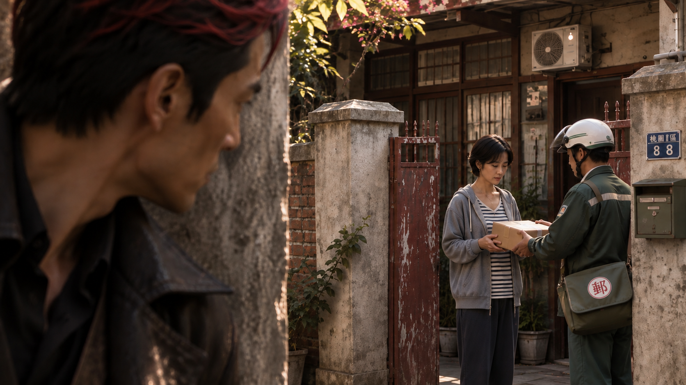
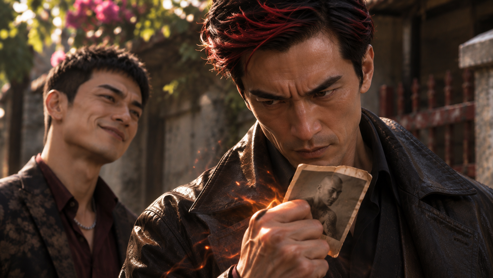
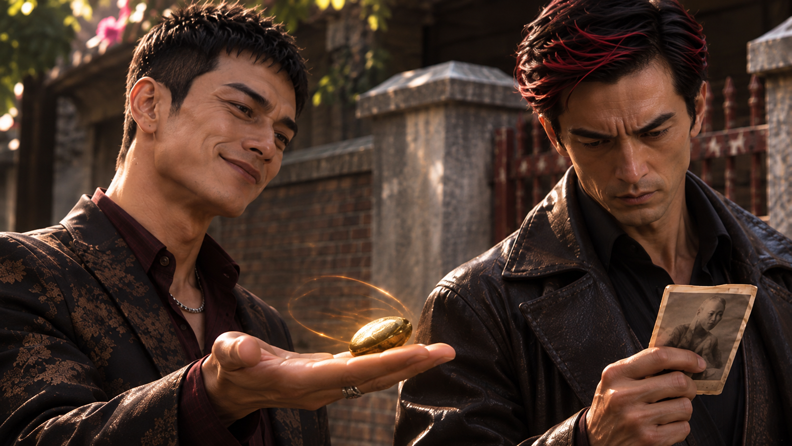

WHITE MAGIC ART STUDIO
第二章
回憶的花院
對大多數人而言，童年總有許多值得懷念的時光。
放學後與朋友嬉戲、在操場上追逐奔跑，或是為了明天的小考煩惱——那些再平凡不過的日常，對梁景皓而言，卻是難得的奢侈。
身為梁家長子，他自幼便被賦予特殊的使命。
除了學校課業，他還必須接受父親梁晉輝安排的武術與聖術訓練。隨著年齡增長，訓練的強度不減反增。到了高中，景皓甚至開始懷疑，自己究竟是在為未來做準備，還是永遠活在一個無法達成的期待裡。
而二十年前的這一天，他與父親的矛盾，終於再次爆發。
宜蘭郊區，一處荒廢已久的空地。
「龍兒！專心！」
梁晉輝一聲喝斥，拳風已迎面襲來。
景皓迅速側身閃避，卻見父親拳頭上泛起淡淡的綠光。下一瞬間，數道長著青藍色葉的樹枝自光芒中猛然竄出，宛如甦醒的巨蟒，朝他席捲而去！
景皓眼神一凝，踏上其中一道樹枝，借勢騰空而起。
他沒有選擇後退，反而順著枝條的生長方向疾奔，瞬間拉近與父親的距離。
「喝！」
景皓揮拳直取晉輝的臉頰。
然而，拳頭尚未碰到目標，便被一隻大手牢牢扣住。
「太慢了。」
晉輝順勢扭轉他的手腕，腳下一絆，將景皓重重摔向地面。
「砰！」
塵土揚起。
「咳……呼……」
景皓仰躺在地上，胸口劇烈起伏。汗水沿著額角滑落，浸濕了他的衣領。
晉輝站在一旁，居高臨下地望著兒子。

「只有這種程度，未來要怎麼帶領我們聖術師？」
他停頓片刻，語氣愈發嚴厲。
「別忘了，你是——」
「——『綠色亞斯蘭之星』出現之夜誕生的孩子，未來將繼承木之力，成為帶領木之聖術師、引領世界邁向希望的『木翼』。」
景皓閉著眼睛，一字不漏地接完父親的話。
接著，他不耐煩地睜開雙眼。
「爸，這句話你已經講了上萬次了！」
晉輝眉頭一皺。
「既然知道，為什麼還不認真？」
「我哪裡不認真了？」
景皓撐起身子，拍去衣服上的塵土。
「從小到大，我有哪一天不是照你的安排訓練？放學後不能跟朋友出去，假日也得待在家裡練習。就算我做得再好，你也只會告訴我還不夠！」
「因為你背負的責任，本來就不是普通人能夠承擔的！」
晉輝提高音量。
「龍兒，你知不知道，這個世界有多少聖術師連自己的天賦都不曾察覺？又有多少人因為缺乏引導，最終受到黑暗勢力誘惑，墮落成邪惡的巫師？」
他向前一步。
「那些人需要有人引導，需要有人站出來！你肩負的是整個世界的希望。倘若連你都不願意掌握自己的力量，將來世界陷入混亂，你承擔得起嗎？」
景皓咬緊牙關。
「可是……你怎麼知道那個人一定是我？」
晉輝一怔。
「什麼意思？」
「我說，這一切會不會根本就是個誤會？」
景皓終於忍不住將心裡積壓已久的疑問說出口。
「亞斯蘭之星出現的那天，難道就不可能有其他孩子出生嗎？為什麼你這麼肯定，木翼一定是我？」
他低頭看著自己的雙手。
「況且，我到現在連像樣的聖術都施展不出來。除了讓種子發芽，我還能做什麼？」
他的聲音逐漸低沉。
「這樣的我，怎麼可能成為木翼？又憑什麼當所有人的領導者？」
荒地上突然安靜下來。
晉輝凝視著兒子，眼神中掠過一絲難以察覺的情緒。
「亞斯蘭之星出現的夜晚，全世界只會誕生一名被選中的孩子。」
他緩緩開口。
「而那個孩子，正好出生在我梁晉輝的家裡。」
景皓抬起頭。
「作為你的父親，我有責任讓你成為應有的模樣。」
晉輝的語氣愈發堅定。
「如果你連嘗試都不願意，就先否定自己的使命，那你與那些背棄天賦、走向黑暗的巫師，又有什麼不同？」
「……」
景皓張了張嘴，卻什麼也說不出口。
他明明有滿肚子的委屈，卻發現無論自己說什麼，父親似乎都只會聽見同一件事——
他還不夠努力。
「夠了。」
晉輝轉身走回訓練場中央。
「對話結束。站起來，再出拳！」
景皓低着頭，拳頭緊握。
片刻後，他終究還是咬著牙站了起來。
傍晚，宜蘭梁家大宅。
「我們回來了……」
傍晚，父子倆返回位於宜蘭的梁家大宅。
梁家不僅擁有寬敞的私人宅邸，還經營著頗具規模的茂陽集團。身為董事長的梁晉輝，同時掌管一間聲名遠播的醫院，在商界與醫療領域皆具有相當影響力。
然而，這些令人稱羨的成就，對景皓而言，從來都不是快樂的來源。
「回來啦！」
母親張慧萍站在玄關，笑盈盈地迎接父子倆。
「怎麼回事？你們兩個的臉怎麼一個比一個臭？」
「問他。」
晉輝冷冷丟下一句話，脫下外套，便逕自走向書房。
慧萍望著丈夫離去的背影，無奈地嘆了口氣。
接著，她轉向兒子。
「景皓？」
「……可以不說嗎？」
景皓低著頭，慢慢解開纏在手上的護繃帶。
慧萍看著他泛紅的手腕，沒有繼續追問。

「好吧。」
她伸手接過兒子的護具。
「東西先放著，陪媽去個地方。」
「去哪？」
「去了就知道。」
宅邸後方，是一座寬敞的玻璃花院。
夕陽透過大片玻璃灑落，將各色花卉染上一層溫暖的金光。空氣中瀰漫著淡淡花香，與方才訓練場上的塵土氣息截然不同。
「媽，你帶我來這裡幹嘛？」
「賞花啊。」
慧萍回頭一笑。
「難得天氣這麼好，就當作陪你老媽散散心，不行嗎？」
「……好啦。」
景皓跟著母親走進花院。
慧萍停在一盆花前。
「來，考考你。這是什麼？」
「牡丹。」
「那這個？」
「薰衣草。」
「這朵呢？」
「金魚草。」
「哎呀，記得真清楚！」
慧萍滿意地點頭。
「金魚草象徵繁榮與吉祥，名字也很討喜。你看，花是不是很有意思？」
「嗯……」
景皓漫不經心地應了一聲。
慧萍又走向一旁的鬱金香。
「還有這些，你記得嗎？」
「記得啊，爸種的。」
「沒錯。」
慧萍輕輕撫過花瓣。
「這些是你爸特別用聖術培育的品種，只有我們家花院才有。」
她的眼神柔和了些。
「鬱金香有真摯告白的寓意。你爸當年就是用這些花向我表達心意的。」
景皓忍不住皺眉。
「媽……」
「嗯？」
「你明明知道我今天跟爸吵架，還故意講這些？」
慧萍轉頭看他，忍俊不禁。
「當然知道啊，又不是第一次了。」
「那你還……」
「因為我想讓你知道一件事。」
她望向花院裡盛開的花朵。
「每一朵花，都有屬於自己的價值。」
接著，她看向兒子。
「你也是。」
景皓微微一怔。
慧萍沒有急著解釋，只是帶著他走到花院深處。
那裡擺放著一盆與周圍花卉截然不同的植物。
一根細長的枝條上，靜靜綻放著兩朵銀白色的花。半透明的花瓣透著柔和光澤，細緻的紋路宛如天然雕琢而成。
「這兩朵，你認得嗎？」
「神癒花。」
景皓毫不猶豫地回答。
「聽說只要使用它，任何傷口和病痛都有機會痊癒……這應該是爸最寶貝的花吧？」
「嗯。」
慧萍點點頭。
「傳說這是上個世紀，上一任木翼留給梁家祖先的禮物。它永不凋謝，也沒有種子。據說，只有真正的木翼，才有辦法重新栽種它。」
「沒有種子？」
景皓湊近觀察。
「那到底要怎麼種？而且我記得，木之聖術師的『術之木』不是不會開花嗎？」
「這個嘛……」
慧萍聳了聳肩。
「我也不知道。說不定等你成為木翼，就會明白了。」
「……又是木翼。」
景皓的表情瞬間沉了下來。
慧萍察覺他的變化，沒有立刻接話。
過了一會兒，景皓才低聲開口。
「媽。」
「嗯？」
「你真的覺得……木翼有存在的必要嗎？」
慧萍轉頭望向他。
「怎麼突然這麼問？」
「因為現在的世界，已經跟以前不一樣了吧？」
景皓望著玻璃窗外的夕陽。
「雖然還是有惡魔侵擾人類，但大多都是小鬼、小魔。有些連牧師、道士都能處理。」
他停頓片刻。
「既然如此，為什麼還需要一個木翼，去召集全世界的聖術師？」
慧萍沒有立即回答。
她走向一旁，摘下一朵盛開的向日葵。
「景皓，你看。」
「嗯？」
「這朵花漂亮嗎？」
「……漂亮啊。」
「那你看看這個。」
她輕輕折斷花莖，將斷口翻向兒子。
景皓湊近一看，頓時皺起眉頭。
原來，看似健康的花莖內部，早已布滿蟲蛀的痕跡，部分組織甚至開始腐爛。
「這……怎麼會這樣？」
「因為有些問題，光看外表，是看不出來的。」
慧萍將花莖放在掌心。
「你現在眼中的世界，也許就像這朵向日葵。看起來和平、熱鬧，每個人都過著自己的生活。」
她抬起眼睛。
「可是，你真的知道那些看不見的地方，正在發生什麼事嗎？」
景皓沉默了。
「有時候，黑暗並不是不存在。」
慧萍輕聲說。
「只是我們還沒看見它。」
景皓垂下視線。
「就算真的有那麼多危險……」
他苦笑了一下。
「憑我現在的能力，又能做什麼？」
慧萍靜靜聽著。
「說不定景毅都比我適合當木翼。」
「景毅？」
「他現在已經能召喚自己的術器了。」
景皓看著雙手。
「可是我呢？除了讓種子發芽，還有那個沒什麼戰鬥力的木瞳術……」
他停了一下。
「媽，你知道我的木瞳術是『共感』吧？」
「知道啊。」
「我可以感受到視線範圍內生命的情緒。」
景皓深吸一口氣。
「所以每次訓練，我都知道爸在想什麼……不，應該說，我知道他是什麼感受。」
他緩緩握緊拳頭。
「焦慮、急躁……還有失望。」
慧萍的神情逐漸柔和。
「有時候，我甚至不需要看他的表情，就知道他又對我失望了。」
景皓勉強笑了笑。
「很煩吧？明明已經夠努力了，還得一直感受到那些情緒。」
他低下頭。
「我真的不知道，自己到底還能怎麼做。」
慧萍看了他一會兒。
接著，她輕輕握住兒子的手。
「來，我們坐下吧。」
母子倆並肩坐在花院的石椅上。
夕陽逐漸西沉，金色光線穿過玻璃，映照在兩人身旁的花朵上。

「景皓，你知道媽媽為什麼喜歡種花嗎？」
景皓搖搖頭。
「不知道。因為漂亮？」
「那當然也是原因之一。」
慧萍笑了笑。
「不過，真正讓我喜歡種花的，是照顧它們的過程。」
她指向附近的花盆。
「你看，牡丹、薰衣草、金魚草……每一種花需要的環境都不一樣。有些喜歡陽光，有些需要陰涼；有些要常澆水，有些水太多反而會爛根。」
「嗯。」
「我以前剛開始種薰衣草的時候，總覺得只要多給它一點水，它就能長得更好。」
慧萍苦笑。
「結果呢？差點把整盆都養死了。」
景皓忍不住笑了一聲。
「原來你也會養死花？」
「喂！誰不是從新手開始的？」
慧萍輕輕拍了他的肩膀。
接著，她語氣放緩。
「後來我才明白，不是我給得愈多，花就一定長得愈好。」
她看向景皓。
「重要的是，我有沒有真正了解它需要什麼。」
景皓的笑容漸漸收斂。
「你爸對你，大概就像我以前照顧薰衣草的樣子吧。」
「……」
「總覺得只要再多訓練一點、再嚴格一點，你就能成為他期待中的木翼。」
慧萍想了想，又補充道：
「不過，你爸澆的水，恐怕比我當年還多上好幾倍。」
景皓終於笑了。
「何止幾倍……都快淹死了。」
「對吧？」
慧萍也笑了起來。
但笑過之後，她輕聲問：
「可是，景皓，你有沒有想過……」
「嗯？」
「你爸不知道該怎麼栽培你，那你自己呢？」
景皓一愣。
「你知道自己需要什麼嗎？」
「我……」
他張了張嘴，卻回答不出來。
慧萍輕輕握住他的手。
「你一直很努力地成為爸爸期待的模樣。」
她看著兒子。
「可是，你有沒有好好想過，自己想成為什麼樣的人？」
景皓沉默了許久。
「……我不知道。」
這一次，他沒有逞強。
「那我們就一起慢慢找吧。」
慧萍微笑。
「花不知道怎麼照顧，可以請教園藝專家。至於你嘛……」
她抬頭望向天空。
「我倒是認識一位很好的老師。」
「老師？」
景皓疑惑地看著她。
「誰啊？」
慧萍伸出手指，輕輕指向天際。
「天上的那位。」
景皓順著她的手勢望去。
「……祂？」
「嗯。」
慧萍點點頭。
「據我所知，你們的聖術能力，是祂所賜予的。就連你在亞斯蘭之星出現的夜晚誕生，也不是偶然，對吧？」
景皓沉默片刻。
「我不知道欸……」
他抬頭望著逐漸染紅的天空。
「媽，我不是不相信祂存在。」
「我知道。」
「只是……」
景皓遲疑了一下。
「如果祂真的那麼偉大，甚至擁有六大聖術的力量，為什麼還要讓惡魔存在？」
他皺起眉頭。
「還有那些災難、疾病、痛苦……如果祂真的能做任何事，為什麼不乾脆讓這些東西全部消失？」
慧萍沒有立刻回答。
她只是靜靜地望著兒子。
過了一會兒，才輕聲說：
「這個問題啊……媽媽以前也問過祂。」
景皓轉頭。
「真的？」
「真的。」
「那祂怎麼回答你？」
慧萍想了想。
「祂讓我遇見了你爸。」
「……蛤？」
「還有你、景毅，以及你的弟妹們。」
景皓愣了幾秒。
「等一下……這算什麼答案？」
慧萍忍不住笑了。
「你覺得不算嗎？」
「當然不算啊！我問的是為什麼世界上會有痛苦耶！」
「我知道。」
慧萍的笑容漸漸變得溫柔。
「其實，我也還沒有完全明白那個問題的答案。」
景皓看著她。
「可是，有一件事，我很確定。」
她望向眼前的花院。
「這個世界確實有很多令人難過的事情。有些痛苦，我們甚至一輩子都無法理解。」
她停頓片刻。
「但就在這樣的世界裡，祂讓一個平凡的我，遇見了身為聖術師的你爸。」
慧萍輕輕笑了。
「然後，我有了你們。」
景皓沒有說話。
「因為你們，我經歷過很多快樂，也有過擔心、害怕，甚至傷心的時候。」
她轉頭望向兒子。
「可是，我也因為你們，看見了希望。」
夕陽映照在慧萍的臉上。
「所以，媽媽還不知道為什麼這個世界會有那麼多痛苦。」
她輕聲說：
「但我知道，祂沒有放棄這個世界。」
景皓怔怔地望著母親。
慧萍伸出手，輕輕整理他凌亂的頭髮。
「而且，景皓。」
「嗯？」
「你爸總是告訴你，你未來要成為多麼偉大的人。」
她笑了笑。
「可是對媽媽來說，你不用等到成為木翼，才值得被愛。」
景皓的眼神微微一動。
「不管你將來能不能帶領聖術師，不管你的聖術有多強……」
慧萍輕輕撫摸他的頭。
「你都是我的兒子。」
她的聲音柔和而堅定。
「我一直都以你為榮。」
景皓低下頭。
他原以為自己早已習慣了父親的責備，也習慣了把所有不滿藏在心裡。
然而，母親這幾句簡單的話，卻讓他胸口某個緊繃已久的地方，慢慢鬆開了。
「……媽。」
「嗯？」
「那如果我真的不想當木翼呢？」
慧萍沒有急著回答。
她看著兒子，輕輕一笑。
「那你就先別急著決定。」
「咦？」
「你現在還年輕，還有很多事情沒經歷過。」
她握住他的手。
「有些答案，不是別人告訴你，你就能真正明白的。也許要等你自己走過一些路，才會知道它對你有什麼意義。」
景皓若有所思地點點頭。
「所以啊，別一直把你爸的期待當成唯一的答案。」
慧萍抬頭望向天空。
「如果有一天，你真的不知道該怎麼走，就試著問問我的老師吧。」
她笑著補上一句：
「說不定，祂也很樂意收你這個學生呢。」
「……我再考慮看看啦。」
景皓有些不好意思地笑了。
慧萍看著兒子終於舒展的眉頭，也露出安心的神情。
然而，就在景皓再次望向母親時——
他忽然愣住了。
夕陽的餘暉穿過玻璃，將母親的身影映得有些朦朧。
而在她身後，似乎站著另一個人。
那是一名男人。
他的臉上戴著金色半面具，靜靜佇立在花院的光影之間。
景皓猛地眨了眨眼。
「……？」
他再次望去。
那裡卻空無一人。
只有夕陽、花朵，以及母親溫柔的笑容。
……幻覺嗎？
桃園，一處遠離市區喧囂的老舊住宅區。
午後的陽光斜斜落在巷弄間，幾輛機車停靠在斑駁的圍牆旁。這裡的房子大多有些年紀，外牆爬滿歲月留下的痕跡，偶爾傳來幾聲犬吠，與遠處車輛經過的聲響交錯。
一道火光毫無預警地出現在巷子深處。
火焰憑空燃起，在半空中迅速聚攏成人形。隨著最後一縷火苗消散，一名男子悄然站在老房子旁的陰影裡。
炎君
他沒有立即離開，而是抬起頭，望向眼前那棟兩層樓的老屋。

褪色的鐵窗、牆角的盆栽，以及門前那塊略微龜裂的水泥地，一切看起來都再普通不過。
然而，他卻無法將目光移開。
他不知道自己為什麼會來到這裡。
離開陽明山後，他沒有特別決定去處，只是循著某種難以言喻的感覺移動。等回過神來，便已經站在這條陌生的巷子裡。
陌生嗎？
炎君微微皺眉。
他望著屋內透出的光線，試圖從那些模糊的輪廓中尋找什麼。某種說不上來的情緒盤踞在胸口，像是有件極為重要的事被遺忘了，卻始終想不起來。
就在這時，一陣電鈴聲打斷了他的思緒。
「叮咚——」
「王詩涵女士在嗎？」
一名郵差站在老屋門前，對著門旁的對講機喊道。
屋內傳來腳步聲。
不久，一名留著短髮的女子推開大門。她看起來約莫三十出頭，穿著簡單的居家服，接過郵差遞來的包裹，低頭確認了收件資訊。
「對，是我。謝謝你。」
「不會，麻煩這邊簽收一下。」
炎君下意識地退到牆後。
他不知道自己為何要躲。
那名女子的容貌並沒有喚起任何具體的記憶，可當她出現在視線裡時，他卻感到一陣莫名的熟悉。
尤其是她低頭簽收時，微微側過臉的模樣。
他似乎曾經在哪裡見過。
炎君凝視著她，直到女子抱著包裹轉身走回屋內。

大門緩緩關上。
那股奇異的感覺仍未散去。
「你到底在幹嘛……」
一道聲音忽然從身後傳來。
炎君猛地回頭。
曾永華不知何時已經站在巷口，雙手插在口袋裡，臉上掛著一貫漫不經心的笑容。
「沒想到你一離開陽明山，第一個跑來的地方竟然是這裡。」
他順著炎君方才的視線望向那棟老屋，語氣裡帶著幾分調侃。
炎君沒有理會他的玩笑。
「我自己也不知道為什麼會來這裡。」
他再次望向那扇緊閉的大門。
「只是覺得……好像有什麼東西在這裡。」
曾永華看了他一眼，臉上的笑意稍稍收斂。
「唉，阿豪啊。」
他搖了搖頭。
「有些事情，忘了就忘了。何必一直糾結那些不必要的過去？」
炎君轉過身，冷冷地看著他。
「你知道什麼？」
「我？」曾永華聳了聳肩，「我什麼都不知道啊。」
他停頓片刻，嘴角又浮現笑意。
「不過，那位大人倒是早就料到你會這樣。」
說著，他從衣服內側取出一張泛黃的老照片。
「所以，特別請我帶了個東西給你。」
炎君低頭看向照片。
那是一張年代久遠的影像，紙張邊緣已經磨損，畫面中的男子剃著光頭，裸露的手臂與頸部布滿刺青。他直視鏡頭，臉上帶著令人不舒服的笑容。
炎君伸手接過。
就在看到照片的瞬間，一股劇烈的異樣感猛然竄入腦海。
他的呼吸驟然停滯。
眼前的巷弄彷彿在剎那間消失。
取而代之的，是一間昏暗的房間。
搖晃的燈光。
刺耳的笑聲。
一名被綁在椅子上的女人。
還有那個男人。
照片裡的光頭男子。
他站在女人面前，身上的刺青隨著動作若隱若現。女人掙扎著，似乎正在向誰求救。
緊接著，一道稚嫩而絕望的聲音響起。
『放過我媽！』
炎君渾身一震。
那是誰的聲音？
『啊——！』
女人的尖叫聲刺穿了混亂的記憶。
『哈哈哈哈哈！』
男人的狂笑迴盪在耳邊。
畫面不斷閃爍，時而清晰，時而破碎。他看見自己似乎站在房間的某個角落，想要衝上前去，身體卻動彈不得。
恐懼、憤怒、無助。
那些本不該存在於他腦海中的情緒，此刻卻真實得令人窒息。
然後，一切戛然而止。
炎君猛地回過神來。
午後的巷弄依舊安靜，遠處傳來機車發動的聲音。
他低頭看著手中的照片，發現自己的手正在微微顫抖。
剛才那是什麼？
記憶？
不對。
他怎麼可能會有那種記憶？
炎君努力回想那名女人的臉，卻發現無論如何都無法看清。
只有那聲呼喊，不斷在腦海中迴盪。
放過我媽……
媽？
炎君的瞳孔微微收縮。
我……有母親？
一個更加陌生的念頭隨之浮現。
我有家人？
他忽然轉頭望向身後的老屋。
那扇門依舊緊閉。
「怎麼樣？」
曾永華的聲音將他拉回現實。
他似乎對炎君的反應毫不意外，甚至饒有興致地觀察著對方的神情。
「關於『那位大人』交代給我們的任務，你有想法了嗎？」
炎君沒有立刻回答。
他盯著照片中的男人，原先困惑的神情逐漸被另一種情緒取代。
那股情緒來得毫無道理，卻強烈得幾乎要將他吞沒。
他的指尖冒出一縷火苗。
照片的邊緣微微捲曲。

「紅蓮幫……」
三個字從他齒縫間緩緩擠出。
曾永華挑起眉毛。
「哦？」
炎君抬起頭。
那雙眼睛裡已經沒有方才的迷惘，只剩下令人不寒而慄的怒意。
曾永華看著他，滿意地笑了。
「看來，你已經有些想法了呢。」
他伸出手，一隻金色甲蟲正靜靜停在他的掌心。
甲蟲的外殼泛著金屬般的光澤，細小的足部輕輕活動，隨後像是接收到某種指令，六隻腳同時向腹部收攏。
喀。
伴隨一聲細微的聲響，她的身體逐漸收縮，最後化為一枚表面光滑的金色橢圓物。

曾永華將它拋給炎君。
「對了，我的寶貝先借你。」
炎君接住金色物體，低頭看了一眼。
「你知道該怎麼做。」
曾永華沒有進一步解釋。
他走上前，伸手拍了拍炎君的肩膀。
「那就麻煩你囉……」
他的笑容在陽光下顯得格外意味深長。
「炎君大人。」
說完，他轉身沿著巷弄離去。
炎君獨自站在原地。
一手握著金色甲蟲，另一手仍緊緊攥著那張老照片。
片刻後，他再次望向那棟老屋。
屋內隱約傳來電視的聲音，以及女人與某人交談的動靜。
那是再平凡不過的日常。
他卻突然覺得，自己似乎曾經擁有過這樣的生活。
只是無論如何，都想不起來。
炎君緩緩收回目光。
掌心的火焰再度燃起，將他的身影一點一點吞沒。
當火光散去時，巷弄裡已經空無一人。
只有老屋門前的盆栽，在午後的微風中輕輕搖晃。